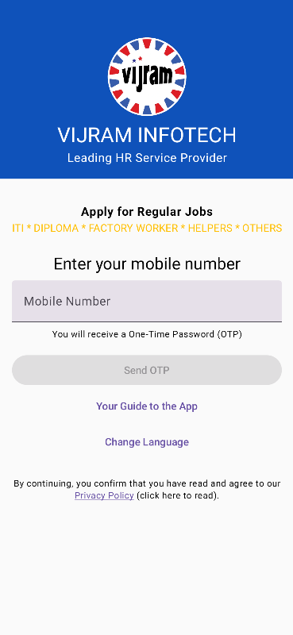

VIJRAM Jobs Lite
Connecting Local Talent with Local Opportunities
A lightweight Android app developed by VIJRAM Infotech to help unskilled and semi-skilled job seekers discover employment opportunities near their location with a simple registration process.

Simple Registration Process
Getting started with VIJRAM Jobs Lite is quick and hassle-free:
- Enter your mobile number.
- Verify your number using OTP.
- Provide basic personal details.
- Select your preferred job category.
- Share your current location.
Once registered, our recruitment team matches candidates with suitable job openings in their location or nearby industrial areas. When a relevant opportunity becomes available, we directly contact the candidate and assist them through the recruitment process.
Who Can Use the App?
VIJRAM Jobs Lite is ideal for job seekers looking for employment in various industries, including:
- Helpers (Male & Female)
- Welders
- ITI Fitters
- Electricians
- Machine Operators
- CNC & VMC Operators
- Accountants
- Office Assistants
- Warehouse Staff
- Packers
- Quality Inspectors
- Production Associates
- Drivers
- Supervisors
- And many other skilled and semi-skilled professionals.
Once registered, our recruitment team matches candidates with suitable job openings in their location or nearby industrial areas. When a relevant opportunity becomes available, we directly contact the candidate and assist them through the recruitment process.
Smarter Recruitment Through Technology
VIJRAM Jobs Lite reflects our commitment to using technology to simplify recruitment. By combining our digital platform with experienced recruitment professionals, VIJRAM Infotech delivers faster, more efficient, and location-focused hiring solutions for both employers and job seekers.
Download Now